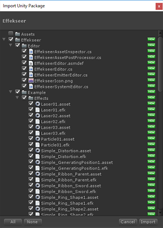

Effekseer UnityPlugin Manual

概要
ゲームエンジンUnityとの連携について説明します。
なお、Unity Technologies社とこのツールは特に提携しているというわけではないため、
バージョンや状況によっては上手く動作しない可能性があります。
Effekseerの再生プログラムはC++で書かれているため、Unity上ではネイティブプラグイン扱いになります。
動作環境
Unityバージョン
Unity 2017 以降
プラットフォーム
EffekseerForUnityには2種類のレンダラーがあります。1つ目はComputeShaderで描画するUnityRendererです。2つ目はネイティブのAPIで描画するNativeRendererです。 UnityRendererはComputeShaderが有効な全ての環境で動きます。一方、NativeRendererは限られたプラットフォームでしか動きません。しかし、マルチスレッドで描画することができます。 レンダラーは Edit -> ProjectSettings -> Effekseer から選択できます. もし、サポートされていないレンダラらーが選択されていた場合、自動的にレンダラーが変更されます。
| Platforms | Graphics API | UnityRenderer | NativeRenderer | Notes |
|---|---|---|---|---|
| Windows | DirectX9 | OK | ||
| DirectX11 | OK | OK | ||
| DirectX12 | OK | |||
| OpenGLCore | Theoretically | |||
| macOS | OpenGLCore | Theoretically | OK | |
| OpenGL2 | OK | |||
| Metal | OK | |||
| Android | OpenGL ES 2.0 | OK | もしVulkanがデフォルトの場合、Player Settingsを変更してください。 | |
| OpenGL ES 3.0 | OK | |||
| Vulkan | Debugging | |||
| iOS | OpenGL ES 2.0 | OK | ||
| OpenGL ES 3.0 | OK | |||
| Metal | OK | |||
| WebGL | OpenGL ES 2.0 (WebGL 1.0) | OK | 起動直後に音を再生するとおかしくなります。 | |
| OpenGL ES 3.0 (WebGL 2.0) | OK | |||
| Console Game | Theoretically | 開発者がC++をコンパイルする必要があります。 |
Theoretically - テストはしていないですが、理論的には動作します。
Debugging - テストはしましたが、何らかの不具合により動きません。
導入方法
Effekseer.unitypackage を開いてUnityプロジェクトにインポートします。

既知の問題
- DirectX11のForwardレンダラーで、Editor上のGameViewのみ、3Dモデルの表裏が逆になります。Effekseer上でカリングの設定を変更してください。
Todo
- ネイティブ描画の実装 (Metal, Vulkan)
- ポイントライトのコントロール
- インスタンスのコリジョン判定